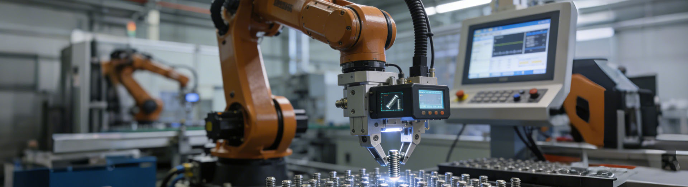

Automotive
Automotive Stainless Steel Connector Assembly
An automotive parts case focused on stainless steel connector assemblies for vehicle fluid systems.
The site uses cases, certifications, and practical inspection messaging to support overseas buyers who need confidence before sending drawings.

An automotive parts case focused on stainless steel connector assemblies for vehicle fluid systems.

A premium audio case emphasizing cosmetic finish, tolerance, machined appearance, and brand presentation.

A prototype scenario for stainless steel and aluminum medical parts that need stable machining quality and finishing.

The brand knowledge recommends concrete applications, materials, tolerances, and industry scenarios. This makes quality messaging more useful to engineering and procurement audiences.
Quality management credential recorded in the brand profile.
Automotive quality proof point for demanding industrial customers.
Drawing and manufacturability guidance before quotation and production.
CNC turning, milling, 5-axis machining, sheet metal, and surface finishing.
Material coverage includes aluminum, stainless steel, brass, and other metals commonly used for precision machined parts.
Accuracy expectations should be discussed based on part geometry, material, process, drawing requirements, and inspection criteria.
Customers should communicate with the supplier to check production progress, order status, and delivery updates.